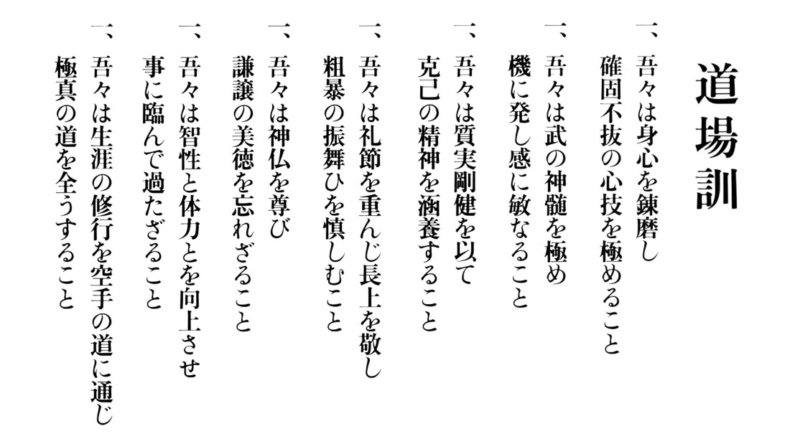

Dojo Kun
- We will train our hearts and bodies for a firm unshaken spirit.
- We will pursue the true meaning of the martial way so that, in time, our senses may be alert.
- With true vigour, we will seek to cultivate a spirit of self-denial.
- We will observe the rules of courtesy, respect our superiors, and refrain from violence.
- We will follow our religious principles and never forget the true virtue of humility.
- We will look upwards to wisdom and strength, not seeking other desires.
- All our lives, through the discipline of karate, we will seek to fulfill the true meaning of the Kyokushin way.